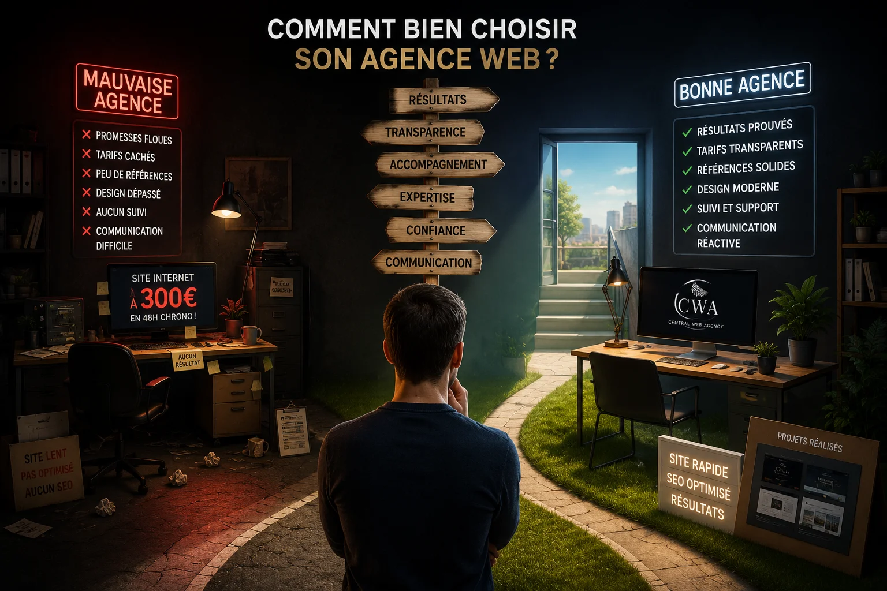

Il y a des dizaines d'agences web à Lyon et dans sa région. Certaines sont excellentes, d'autres surfacturent pour du travail médiocre. Comment faire la différence ? Voici les critères qui comptent vraiment, sans langue de bois.
1. Regardez le portfolio avant tout
C'est le premier réflexe à avoir. Toute agence sérieuse montre ses réalisations. Si le site de l'agence elle-même est vieillot ou peu soigné, c'est un signal d'alarme immédiat — elle sera incapable de vous livrer mieux que ce qu'elle s'applique à elle-même.
Regardez aussi la diversité des projets. Une agence qui n'a fait que des sites de restauration sera moins à l'aise pour créer le site d'un coach sportif ou d'un artisan. Demandez des exemples proches de votre activité.
Vérifiez que les sites du portfolio sont réellement en ligne et fonctionnels. Certaines agences montrent des maquettes ou des projets abandonnés. Testez les liens, ouvrez-les sur mobile.
2. Méfiez-vous des prix trop bas comme des prix trop élevés
Un site vitrine proposé à moins de 300€ par une agence lyonnaise cache presque toujours quelque chose : un template acheté 20€ légèrement modifié, du travail externalisé à l'étranger, ou une prestation bâclée. À ce prix, ne vous attendez pas à du sur-mesure ni à un SEO sérieux.
À l'inverse, une agence qui vous propose 8 000 à 15 000€ pour un simple site vitrine sans fonctionnalité complexe facture probablement ses frais de structure — locaux en centre-ville, grande équipe, processus lourds. Pour un indépendant ou une TPE, c'est rarement justifié.
La fourchette réaliste pour un site vitrine professionnel et soigné à Lyon en 2026 se situe entre 450 et 4 000€ selon la complexité. Tout ce qui sort largement de cette fourchette dans un sens ou dans l'autre mérite une explication claire.
3. Posez la question de la propriété du site
C'est la question que la plupart des gens oublient de poser, et c'est pourtant l'une des plus importantes. Après livraison et paiement, êtes-vous propriétaire du code source de votre site ?
Certaines agences, notamment celles qui travaillent par abonnement, restent propriétaires du code et peuvent mettre votre site hors ligne si vous résiliez. Ce n'est pas forcément un problème si c'est clairement expliqué dès le départ et si le prix est cohérent. Mais vous devez le savoir avant de signer.
D'autres vous livrent le code complet et vous êtes totalement libre de changer d'hébergeur, de prestataire, ou de modifier vous-même votre site. C'est le cas des formules clé en main.
4. Vérifiez qui fait réellement le travail
À Lyon comme ailleurs, certaines agences se présentent comme des studios locaux mais sous-traitent l'intégralité du développement à des prestataires étrangers. Le résultat peut être correct, mais vous payez une marge importante pour une coordination que vous pourriez éviter en travaillant directement avec un studio local ou un freelance.
Demandez directement : "Qui va concevoir et développer mon site ?" Une réponse vague ou évasive est un signal d'alarme.
5. Lisez le contrat avant de signer
Un bon contrat avec une agence web doit préciser au minimum :
- Le périmètre exact de la prestation (nombre de pages, fonctionnalités)
- Le prix total et les modalités de paiement
- Les délais de livraison
- Qui est propriétaire du code après livraison
- Ce qui se passe en cas de modification demandée après validation
- Les conditions de résiliation si c'est un abonnement
Si l'agence refuse de mettre ces éléments par écrit ou balaie vos questions d'un revers de main, passez votre chemin.
6. Testez la réactivité avant de signer
Envoyez un email ou remplissez le formulaire de contact de l'agence. Combien de temps met-elle à vous répondre ? Si elle met 3 jours à répondre à un prospect, imaginez combien de temps elle mettra à traiter vos demandes une fois que vous aurez payé.
La réactivité est l'un des critères les plus révélateurs de la qualité d'une agence. Une petite structure locale répond souvent plus vite et de façon plus personnalisée qu'une grande agence avec un service commercial standardisé.
7. Préférez une agence qui connaît votre territoire
Pour un professionnel basé à Lyon, Vienne, Bourgoin-Jallieu ou dans la région lyonnaise, travailler avec une agence locale a des avantages concrets : elle connaît le marché local, peut vous rencontrer en présentiel, et comprend les spécificités de votre clientèle régionale.
Une agence parisienne peut faire du bon travail, mais elle ne saura pas spontanément que votre clientèle vient essentiellement de Lyon 3 et de Villeurbanne, ou que votre secteur d'activité est très concurrentiel sur Vienne mais peu sur Bourgoin-Jallieu.
La meilleure agence web n'est pas forcément la plus grande ni la plus chère. C'est celle qui comprend votre activité et qui est là quand vous en avez besoin.
Notre positionnement, et pourquoi on vous le dit clairement
Chez Central Web Agency, basés à Heyrieux à 25 km de Lyon, nous sommes une petite structure. Pas de commerciaux, pas d'intermédiaires — vous travaillez directement avec la personne qui crée votre site.
Nos tarifs sont clairs : à partir de 450€ TTC en paiement unique pour un site clé en main, ou à partir de 39€ par mois en abonnement avec tout inclus. TVA non applicable, art. 293B du CGI. Vous êtes propriétaire à 100% dans la formule clé en main. Dans la formule abonnement, les conditions de résiliation et de récupération de contenu sont clairement indiquées dans notre contrat.
On ne prétend pas être la meilleure agence web de Lyon. On prétend être sérieux, réactifs et honnêtes, et on vous laisse en juger sur nos réalisations.